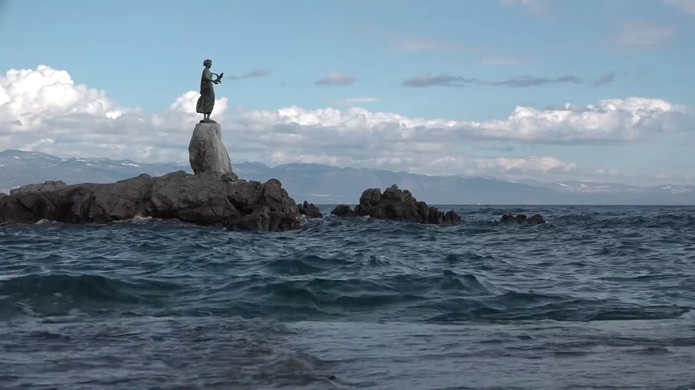

Master in Journalism
University of Maryland, Philip Merrill College of Journalism, College Park, Md.
Expected to graduate May 2022
Master in Journalism with focus on political communication
University of Zagreb, Faculty of Political Science, Zagreb, Croatia.
GPA: 3.7, Magna Cum Laude
Graduated July 2020
BA in Journalism with focus on press and television
University of Zagreb, Faculty of Political Science, Zagreb, Croatia.
Magna Cum Laude
Graduated July 2017
Exchange semester abroad
University of Warsaw, Faculty of Journalism, Information and Book Studies.
February- June 2017
Fulbright scholarship for M.A. studies at Philip Merrill College of Journalism
International Peace Scholarship for M.A. studies at Philip Merrill College of Journalism
Oscar for Knowledge, National Debate Championship, first place team mentor 2018
Oscar for Knowledge, National Debate Championship, first-place team 2014
Journalist, social media manager
Faculty of Political Science, Zagreb, Croatia.
Covered all relevant events, lectures and conferences at the Faculty of Political Science. In charge of the Faculty’s website, social media and graphics.
2018- 2019
Producer, student assistant
Student Television (Televizija Student), Zagreb, Croatia.
Coordinated Student Television’s newsdesk and all social media content and web content.
Produced an in-depth television magazine CROid: New Generation in both English and Croatian.
2017- 2018
Student editor, journalist
Student Television (Televizija Student), Zagreb, Croatia.
Produced, filmed and edited packages on student life in Zagreb.
2016- 2017
Editor, producer of a radio show
Radio Student, Zagreb, Croatia.
Produced and edited a radio show dedicated to ethnic and national minority rights in Croatia- “Bogatstvo Različitosti”.
2015- 2016
Journalist, student newspaper Global
Zagreb, Croatia.
2015- 2016
Internal affairs journalist
Radio Student, Zagreb, Croatia.
2014- 2015
Video production
Radio production
Mobile Journalism production of packages
Web editing and writing
Languages: English (advanced), Croatian (native), Italian (intermediate), Polish (intermediate), French (intermediate)
Adobe Premiere and Audition
Excel, PSPP, SPSS

CroID The Next Generation is an in-depth magazine about the struggles and adversity Croatian society is currently facing.